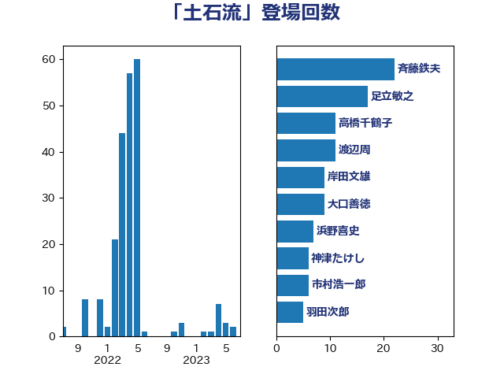

単語「土石流」

| 斉藤鉄夫 | 公明党 | 23 回 |
| 足立敏之 | 自由民主党 | 17 回 |
| 高橋千鶴子 | 日本共産党 | 12 回 |
| 渡辺周 | 立憲民主党 | 10 回 |
| 大口善徳 | 公明党 | 9 回 |
| 岸田文雄 | 自由民主党 | 9 回 |
| 浜野喜史 | 国民民主党 | 7 回 |
| 市村浩一郎 | 日本維新の会 | 6 回 |
| 神津たけし | 立憲民主党 | 6 回 |
| 羽田次郎 | 立憲民主党 | 5 回 |
| 菅家一郎 | 自由民主党 | 5 回 |
| 野上浩太郎 | 自由民主党 | 5 回 |
| 古川元久 | 国民民主党 | 4 回 |
| 小宮山泰子 | 立憲民主党 | 4 回 |
| 朝日健太郎 | 自由民主党 | 4 回 |
| 金子恭之 | 自由民主党 | 4 回 |
| 室井邦彦 | 日本維新の会 | 3 回 |
| 平口洋 | 自由民主党 | 3 回 |
| 榛葉賀津也 | 国民民主党 | 3 回 |
| 穀田恵二 | 日本共産党 | 3 回 |
| 足立康史 | 日本維新の会 | 3 回 |
| 長峯誠 | 自由民主党 | 3 回 |
| 中根一幸 | 自由民主党 | 2 回 |
| 塩田博昭 | 公明党 | 2 回 |
| 日下正喜 | 公明党 | 2 回 |
| 浜口誠 | 国民民主党 | 2 回 |
| 渡辺猛之 | 自由民主党 | 2 回 |
| 石井啓一 | 公明党 | 2 回 |
| 竹内真二 | 公明党 | 2 回 |
| 野田国義 | 立憲民主党 | 2 回 |
| 長浜博行 | 無所属 | 2 回 |
| こやり隆史 | 自由民主党 | 1 回 |
| たがや亮 | れいわ新選組 | 1 回 |
| 伊藤渉 | 公明党 | 1 回 |
| 佐藤英道 | 公明党 | 1 回 |
| 務台俊介 | 自由民主党 | 1 回 |
| 勝俣孝明 | 自由民主党 | 1 回 |
| 吉川沙織 | 立憲民主党 | 1 回 |
| 和田有一朗 | 日本維新の会 | 1 回 |
| 小山展弘 | 立憲民主党 | 1 回 |
| 小池晃 | 日本共産党 | 1 回 |
| 小沢雅仁 | 立憲民主党 | 1 回 |
| 小里泰弘 | 自由民主党 | 1 回 |
| 山口那津男 | 公明党 | 1 回 |
| 有村治子 | 自由民主党 | 1 回 |
| 柳本顕 | 自由民主党 | 1 回 |
| 柿沢未途 | 無所属 | 1 回 |
| 根本幸典 | 自由民主党 | 1 回 |
| 沢田良 | 日本維新の会 | 1 回 |
| 泉田裕彦 | 自由民主党 | 1 回 |
| 熊谷裕人 | 立憲民主党 | 1 回 |
| 田村貴昭 | 日本共産党 | 1 回 |
| 福島伸享 | 無所属 | 1 回 |
| 自見はなこ | 自由民主党 | 1 回 |
| 芳賀道也 | 国民民主党 | 1 回 |
| 葉梨康弘 | 自由民主党 | 1 回 |
| 輿水恵一 | 公明党 | 1 回 |
| 須藤元気 | 無所属 | 1 回 |
| 高橋英明 | 日本維新の会 | 1 回 |